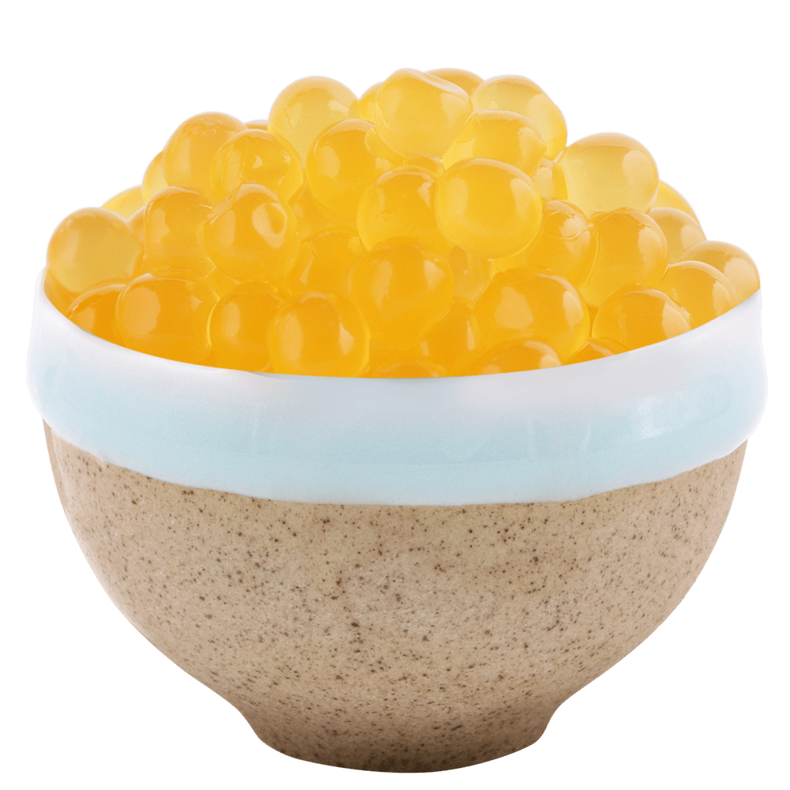
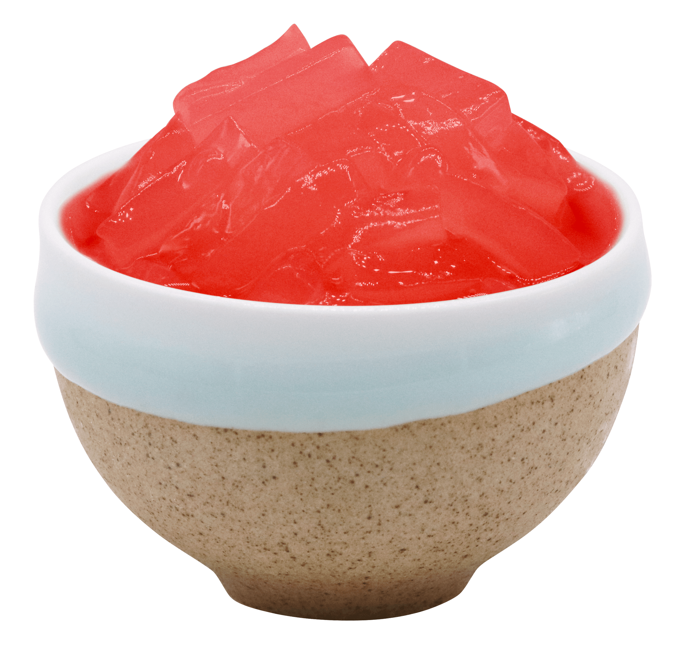

Bubble tea is known for its fun texture and customisable ingredients. Design your own following these steps!
1. Would you like a fruity tea or a milky tea?
Fruity bubble teas are made with fruit syrups and are typically lighter and more refreshing.

Milky bubble teas combine tea with milk or cream for a richer, creamier taste.

2. What tea would you like?
Black Tea

A classic choice, known for its robust flavor and ability to stand up well to milk and sweeteners.
Green Tea

Offers a lighter, more delicate flavor profile, often used in bubble tea variations like matcha.
3. Select your toppings!

Tapioca Pearls: A subtly sweet, chewy addition made from tapioca starch.

Popping Boba: Jelly balls filled with fruit juice that burst in your mouth.

Jelly: Coconut-based topping available in various flavours and shapes.

Pudding: Made from egg yolks, cream, and sugar; great with creamy milk teas.

Aloe Vera: Adds a refreshing crunch and pairs beautifully with fruity teas.